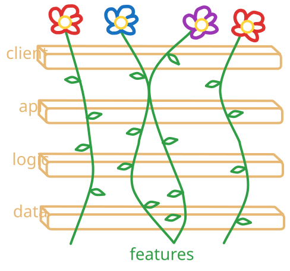
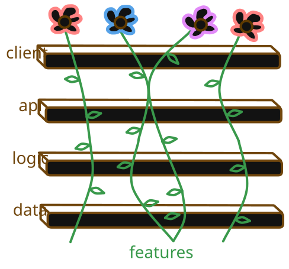
IMPORTANT
Agronomy is the subfield of agriculture relating to the technology and practices that enable modern industrial farming
The start of every year is a magical time. So many possibilities, so much excitement about what the new year might hold. At my day job, my team was coming off the success of rolling out a large product release in 2024, so our slates really were clean heading into 2025. That’s when a question came my way: a question that started with an ominous phrase:
QUESTION
How would you feel about…
A little intonation on the word “feel” is always a canary out of the coal mine. It’s the confession that, even though this is the first time you have heard the question, it’s certainly not the first time the question’s been asked. The only difference is that, this time, it’s yours to answer. In this case, it was:
QUESTION
You’ve played around with using LLMs for software development. We have this product that really needs an update, but we don’t have the time or expertise to work on it.
How would you feel about picking it up and using LLMs to speed up development?
The stack was entirely out of my wheelhouse. It was a mission-critical piece of Visual DB2K software that we had some of the source code for, but not enough to build from. The only complete copy we had was an .exe file that we couldn’t get running on any computer or VM except the one it was initially installed on, delicately transferred from one version of Windows to the next, over the course of the last 25 years. The source code we had on-hand was a series of progressive patches made over that period to keep the thing afloat until the only maintainer — a long-term contractor — could do… something to upgrade it to a modern stack.
That contractor had died a few years prior, so somebody became me.
Hostage No Longer
In March of 2018, “agent” wasn’t quite a thing yet. It’s easy to forget just how fast agentic development has moved. Claude Code was still a closed research preview using 3.7 Sonnet — hell, Anthropic wasn’t even a major player. To the extent that developers were using AI, it was largely:
- Enhanced autocomplete;
- Copy-and-pasting snippets back and forth out of ChatGPT; or
- if you were on the cutting edge, using a harness like Cline directly in your IDE.
That said, given the timeline I was given, how little I had to work from, and how out-of-water I was on the stack (db2k was released when I was about 19 months old, and superseded by dBase PLUS when I was 3), the name of the game was to leverage whatever I could to dig out of the hole we were in. I saw the role of LLMs go from content indexing and vectorization, into light “summarize these files” Markdown generation, into full-fledged code writing over the course of maybe 6 months. An important inflection point happened about 8 months after I got the question: most of the code on the project had been written by LLMs.
By the time true agent-based development approached many of my peers’ radars, I’d been trying to keep ahead on how development might look at this point we’re at today. The first wave was the purely technical approach: my LLM primer presentation was built out of understanding Anthropic’s first wave of agentic documentation. “How to Run Your Own Hostage Negotiation” came once agents got up to the skill that you might see from, say, a very green software development intern and the vibe shifted from “how do these work?” to “will they replace us?”.
When I wrote the primer, I intentionally didn’t fill in the last section. It posed a question that, at that point, would’ve been sheer conjecture to try and answer at the time. However, I think it is time to give it a good, college try:
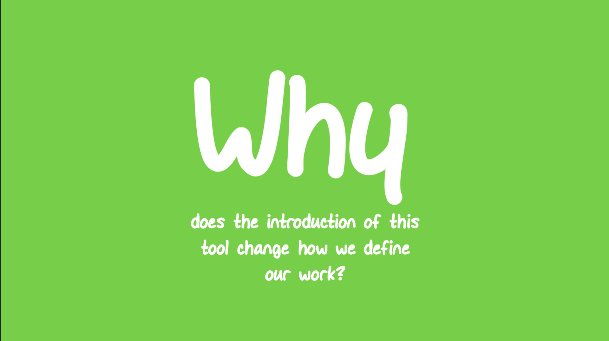
Software as a Factory
What I’m about to say will be brutally obvious to many, but easily forgotten by my generation of software engineers: there was a time when computers were a far cry from general-purpose or universally accessible. The ENIAC’s invention in 1945 was the first time any computer could run programs (plural), but swapping the program meant rewiring the thing, and it was hardly anything you could fit in your garage, nevermind your desktop. The landscape stayed that way until home computers became a conceivable idea in the 70s. At that point, I’d say that software was an artisan good: developed in-house, for specific use cases. Hell, the earliest reference to any general operating system I could find was with IBM’s OS/360, released in 1964.
When I say artisan, I mean it in the most literal sense. Imagine digital homesteading: if you needed a program, you’d better be ready to write it yourself. This was a period of time when people were sharing BASIC games in the back of magazine distributions. If you wanted to play the game, you had to type the physical printed text into your terminal and run it yourself.
Once high demand for computer hardware came, high demand for computer software came hand-in-hand. Like any other market, increased supply must follow, and artisan production of anything is fundamentally incompatible with high supply of it. Artisan production of physical goods was superseded by the factories of the Industrial Revolution, so you might imagine some kind of software factory as the replacement to artisan development. Software isn’t car axles or pinheads, though — so what would a software factory even look like?
This is about the time that papers like Programming as Theory Building start coming into play: engineers that aren’t thinking about software in terms of data structures and algorithms, but in terms of how ideas progressively become runnable software. We do also get the traditional management structure that you might see at a factory floor: line workers, managers, and executives:
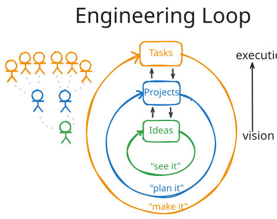
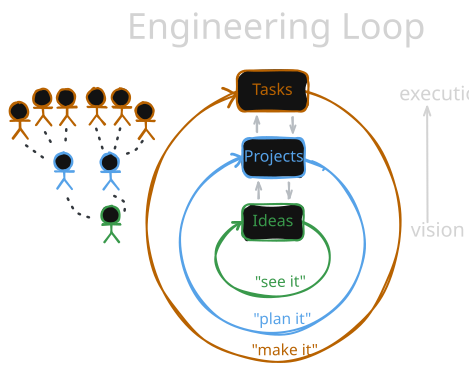
This is 3-layer structure would put a company around Phase 2 in their growth — it’s no longer a handful of executives directly doing work, and there are enough disparate pieces or initiatives to warrant multiple teams. It is no longer artisan; it’s now the start of a factory layout:
- Executives, who have ideas about their product, its position in the market, and how it could sell better to users
- Managers, who are responsible for coordinating work in their specific domain; for example, frontend applications or backend infrastructure.
- Engineers, whose work is coordinated by the managers and move towards implementing the ideas.
At this point, the concerns of software engineering and production engineering start to collide. Schools of thought like Waterfall and Lean/Agile start to come into play, and project boards like GitHub Projects, Jira, etc. become staples across the company. The goal is simple:
- Executives express their ideas
- Managers plan out how to express those ideas as tickets, and plan out how to delegate them out
- Engineers pull tickets, complete them, and merge them into the product.
Rinse, repeat. Even at companies that claim to not have hierarchies like this, you’ll still find this operating structure somewhere in the core of every modern software factory.
And then…
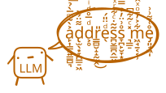
Claude Cometh
I’m going to try my best to correctly express this opinion:
LLMs are better than humans at writing code.
I expressed this same sentiment nearly a year ago in Hostage Negotiations, and they certainly haven’t gotten worse in that time. I’m drawing the boundary, here, at writing code, and writing code ≠ software engineering. I won’t re-hash that in this post: if you are interested, my thoughts on Programming as Theory Building cover that ground already.
The fact that even other engineers seem to miss that distinction, though, means that the actual jobs are at some risk: even if the act of software engineering isn’t automated (and probably not going to be anytime soon), what the job actually looks like is dramatically different than it was even a year ago.
The technology has moved incredibly fast, and I feel that many at the executive and management layers are uncertain of how to react. The discourse around the whole ordeal is confusing and polarized; LinkedIn is a perpetual, inhospitable hellscape of horrible takes.
To try and get a feel for the situation, let’s game out some org chart options.
Do Nothing
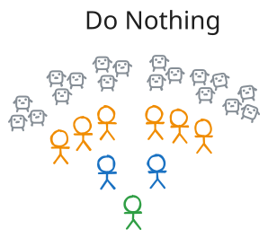
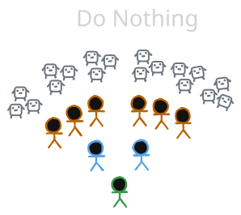
When faced with a complicated problem, it’s always best to take a deep breathe and ask if the best reaction is no reaction. It’s a fair pause to take; the tech space is famously hyperreactive to The Next Big Thing. Let us not forget; just five years ago, Mark Zuckerberg rebranded Facebook into “Meta” in the hopes of pivoting humanity into the Matrix, only to divert billions into a VR fad that lasted all of two years — billions that could’ve been spent refining their core business model of advertising eating disorders to teenagers.
However, LLMs have proven their worth (certainly more worth than VR ever did).
The genie’s out of the bottle, then. I use the term “genie” deliberately: they’re infamous for giving you what you wish for, and wreaking absolute havoc if you’re not careful. Doing nothing, in this case, is a good way to let your capacity to do more work completely outpace your ability to organize and maintain that work.
The proliferation of the technology has hardly been a quiet revolution. I’m sure that, if you were to think about it, or go online anywhere, “do nothing” is a difficult option to justify. I’d recommend ruling it out. So, what else can be done?
Fire the Eggheads
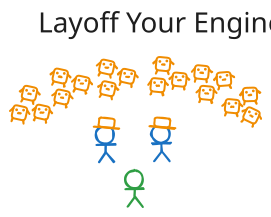
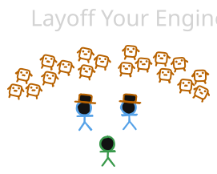
It’s an option, isn’t it? I’ll try to put my personal bias aside, here, and entertain the option in good faith (despite my desire to continue earning an income).
Laying off engineers seems like a reasonable solution. After all, LLMs are extraordinarily good at doing almost the same thing as them. They write code pretty damn well, and have far less reservations about writing something hacky if it’s needed ASAP. I wouldn’t say that their quality is that of a senior engineer, but LLMs have inarguably passed the point point where they could beat out an intern.
If LLMs can do the engineering, can your managers simply manage LLMs instead, and pick up whatever engineering slack is left over?
I’d caution against this, though, because of a concept that’ll come up a lot in the rest of this post: judgement. Not a Christmas Carol-style judgement of three ghosts and a Dickensian street urchin, but judgement about whether or not the internal mechanisms of a project are going in a good direction or a bad one. Anybody who has ever done a full rewrite of a project knows just how much time a series of bad decisions can cost you in time and resources.
QUOTE
While software development is immune from almost all physical laws, the inexorable increase in entropy hits us hard. Entropy is a term from physics that refers to the amount of “disorder” in a system. Unfortunately, the laws of thermodynamics guarantee that the entropy in the universe tends toward a maximum. When disorder increases in software, we call it “software rot.” Some folks might call it by the more optimistic term, “technical debt,” with the implied notion that they’ll pay it back someday. They probably won’t.
— The Pragmatic Programmer, 2nd Edition (2019)
An important thing to remember about these LLMs is that they don’t live for very long. As of writing, frontier LLMs like Claude Opus 5.5 have a context window of 1 million tokens. However, it’s generally accepted that the first ~150k tokens are where they work at their highest quality. Once you get past that point, quality drops off until you start a new session.
Without diving into the technicals of what “a new session” entails, the lifecycle of an LLM session is effectively:
- 0 tokens: You have hired a reasonably smart intern who knows literally nothing about your product.
- 100k tokens: The intern has learned the basics about what your product does and its general structure.
- 150k tokens: The intern has done a reasonably good job at writing the code you asked for.
- 250k tokens: The intern is still working pretty well, but has been awake for awhile and is having trouble focusing on a good solution or remembering small details about what you asked them to do.
- 500k tokens: The intern is starting to trail off and get distracted. They probably need to sleep.
/clear: The intern got too sleepy on the job, so you shot them. This is now their replacement.
Life is beautiful, isn’t it?
Ultimately, what you gain in efficiency with an LLM, you also get a bit of entropy — it’s not one long-lived engineer made of flesh and bone and whatever they had for breakfast that morning: it’s a constant stream of very talented new hires who don’t quite get the bigger picture. You lose the long-term technical thread that is required to keep a product that doesn’t become an unmaintainable nightmare after the first month.
You can write down, in ridiculous detail, everything about your product, its internals, your business motivations, etc., but there’s a level of un-capturable human understanding of the bigger technical picture that a rotating cast of repeatedly-slain interns can’t quite capture.
But hey — we’ve got bloodlust on our minds, so what else could we do?
Fire the Suits
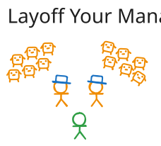
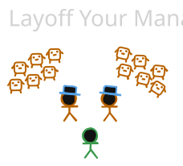
This one seems to be a recent favorite of the largest tech companies: taking an audit of middle managers and asking “…so, what do you do, anyway?” Project managers certainly got some bad PR after a TikTok was deluged with management influencers taking stand-up calls from the sides of resort pools. Shareholders may rejoice at the announcement of those types of layoffs, but what good does it do for the product?
The engineers are basically managers to a bunch of bots, anyway. Couldn’t they — or the LLMs — pick up the management tasks instead?
I’ve seen sentiments swirling around engineering circles, especially on the release of zero-shot classifiers like Jev, that the judgement calls made by PMs for prioritization might be something automatable. I’d, again, lean towards “how can the new tools improve this job” rather than “can this job be replaced.”
For one: those managers are your bridge between executive idealism and vision and the rubber-hits-the-road engineering challenges and limitations. As an engineer, I’ve been in calls with fantastic project managers, where both executives and engineers leave feeling understood, and been in calls with poor (or, god forbid, no project managers) where engineers and executives seem to talk past each other in different languages.
I have also been in environments where no project manager is present, and where engineers are individually harangued by folks all over the company who believe that their specific need is the absolute highest priority, with no cross-channel communication. When everything is the highest priority, nothing is the highest priority, and the actual direction of development is aimless.
Lastly, the project manager is likely the one with the most experience in the products being sold. They’re closest to sales, to marketing, to the actual users who use the thing. When you’re in the code, it is very easy to forget what something looks like from outside the window. It’s grounding to have a human being say “don’t worry about that — it’s not the thing that people will notice”.
We’re quickly running out of bloodlust solutions. The last tier of people to lay off would be the executives, but that seems highly unlikely. We may need to reach for a more peaceful solution. Something old, all-natural, and proven at scale in the modern economy.
Agronomic Software Development
After spending a lot of time trying to find better ways of coexisting with agents, the approach I’ve bumbled my way towards for the past two years has been something akin to gardening. It came up in the Hostage Negotiations post:
The tomato plant/trellis is the analogy I’ve settled on the most — it reminds me of digital gardening. Human beings have figured out how to wrangle things we don’t fully understand for thousands of years, and reading LLM research and model cards can start to feel more like a natural science like biology than something like an applied math paper. We can prod a taught model to check its behavior, but for folks outside of the research side, it falls on us to accept that something we don’t fully understand can still be useful.
What we are responsible for, though, is making sure that this new addition to our lives is handled with care. It’s on us to build systems for handling its use — there’s a long history of intentionally, and irresponsibly, introducing invasive species into our environments to solve one problem only to create a hundred more in its place. This is the distinction I make between engineering and the act of (*vomit*) vibecoding.
I’m shocked that agronomics isn’t a more common word. A massive amount of humanity’s advances in technology, process, and economics comes from farming, and in the modern era, farming and food processing is done at an unimaginable scale. There’s millennia of case studies to work from: how can we take something unpredictable, and harness its benefits1?
Picture, in your mind, a trellis: the wooden scaffolding on which plants can grow vertically.
Across the industry, we all build our apps on stable, thoroughly-vetted libraries that make up the stack we work in. These are sliced into layers: data, business logic, API, and client are all examples of layers on the stack.
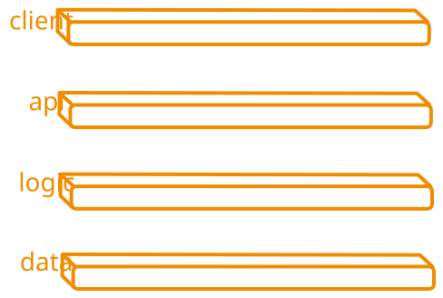
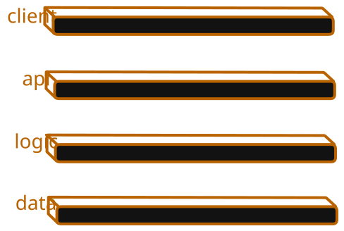
A program, in the end, can only be reliable as the weakest link on the stack. It doesn’t matter if you write a Windows program that will never crash, because Windows itself may crash eventually. The most beautiful, stable frontend in the world is still limited if the framework it’s built on is flaky, or if the API it’s hitting goes down.
This layer-based design is usually referred to as onion, or n-tier, architecture. It cleanly separates the layers such that each one is concerned with a different portion of the development. The client(s) are responsible for surfacing information and capabilities to the user, acting as the front face of the application. The API is responsible for clearly establishing the communications between the clients and the servers. Every piece of the application has a clear concern, and can be reinforced, or worked on, individually.
When working in this type of architecture, then, we refer to features as vertical slices. To the user, they see that they have to log into the client. However, looking at it across the layers, that login will need to start on the client, hit the API, then the data and logic will need to confirm the request to log in and, if successful get the user their data.
Here, we illustrate that vertical slices are not always clean shots through the layers. Perhaps they start from similar places, or they intersect along the way. This is one misconception I had early on when learning about the philosophy: I assumed that layers and slices were like a 2D matrix, where each row is a layer and each column is a feature. The real world, and the programs most useful in the real world, are simply more complicated than that.
This is where the scaffolding and the features intersect: they both inform each others design. The scaffolding must enforce certain patterns for a feature to properly fit on it and latch on, but should be a good fit for the features being created. The features should do their best to fit the needs of the application, but must utilize the scaffolding to avoid becoming a spaghetti, tangled mess rotting on the ground.
Agronomic Teams
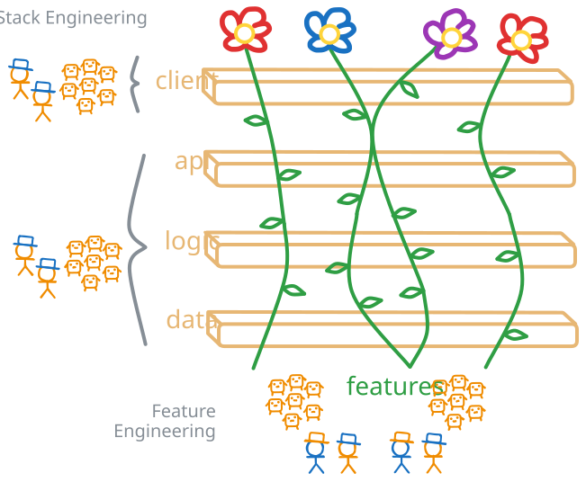
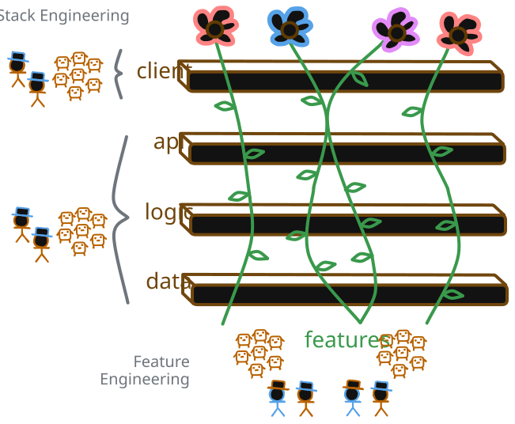
The agronomic metaphor fits well: as software development teams, we cannot get the benefits of LLMs without knowing how we’ll manage their drawbacks. The biggest drawback is that their quality is hard to guarantee, and that trying to micromanage them into doing exactly what we would do means spending more time watching over their shoulder and dictating to them than we’d otherwise spend doing the task ourselves. If we can learn to manage unpredictability, rather than fight tooth and nail to force conformity, then we can start to get actual benefits to both quality and velocity.
In agronomic development, I’d define two primary roles:
- Stack Engineering: Reinforcing the layers of the stack so that each is stable in its own right, flexible to the demands of the requested features, and procedurally well-documented.
- Feature Engineering: High-level design and specification of the required features, framed in terms of how they must pass through the stack in order to accomplish their goals.
Splitting up the stack this way means that neither engineers nor managers are left out in the cold. Instead, both take on a role that blends management with engineering, but with a focus on specific strengths:
Engineers primarily take on stack engineering. Stack engineering is inherently built on hyper-specialized knowledge into each layer of the stack, and how features of that stack’s technology can be utilized to enforce good behavior from the features that are growing on it. Engineers begin thinking less in terms of “pull a ticket, complete a ticket, make a PR for the ticket” and more on the frameworks used by the product. It’s a reinforcement task: making sure that, for upcoming planned features, each layer of the stack has a clearly and singularly defined path to completion.
Feature engineering, then, caters to both engineers and managers coordinating how LLMs grow features through the stack. The knowledge is broad, rather than deep: they trade deep expertise on how each layer operates under-the-hood for a broad understanding of each layer’s API surface. Their deep understanding is in the product specifications, coordinating work done on features, and maintaining a rapid agile feedback loop for both product and stack improvements.
Both sides take on management responsibilities in the way that they work with each other. The stack engineers must keep up-to-date on the rolling quality of features being developed and triage points of friction: areas where features get cluttered, conflicted, or generally confused. In turn, feature engineering must triage their work based on new capabilities created by the stack engineers, occasionally managing refactors of previous work based on new capabilities of the stack.
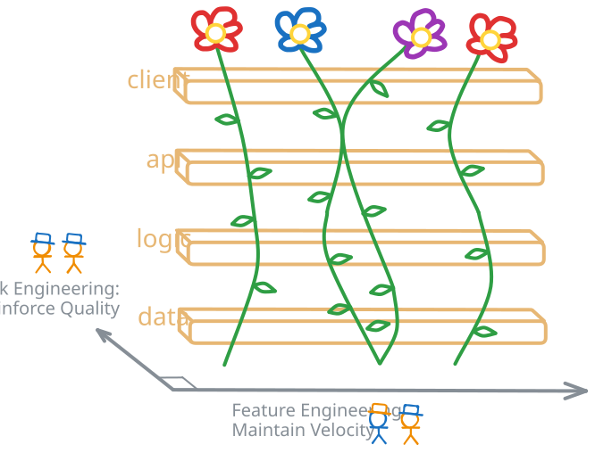
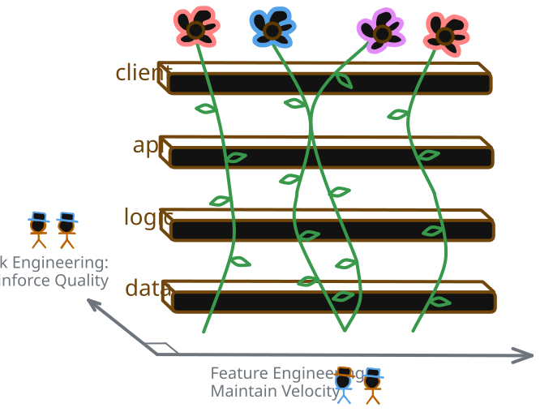
Feedforward & Feedback
All of the work managed by humans is ultimately done to make sure that the conditions in which features are “grown” by agents is high-quality. Part of this is rapid iteration of the system.
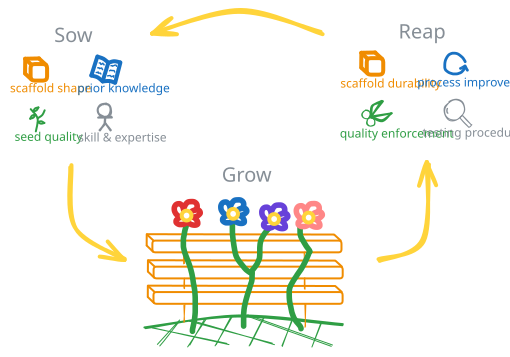
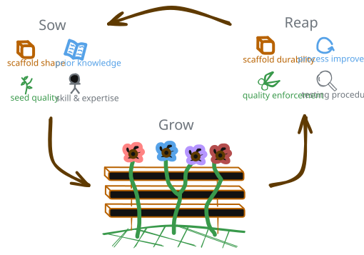
Think about a houseplant, and understanding what conditions it’d thrive best in: what direction of window should it be facing? What kind of soil is the best for it? What temperature or humidity should the room be at? It will always be a case of monitoring the growth, checking for issues, and reacting accordingly.
When introducing something vaguely organic, like code “grown” by an LLM, the principle is the same. The goal of a software development team is to make sure that what we’re creating is of good quality and completed in a timely manner. This takes the rapid feedback cycle promoted by management frameworks like Agile and applies them one layer up the development abstraction: not just to the code we’re writing, but to the environment that code is being written in.
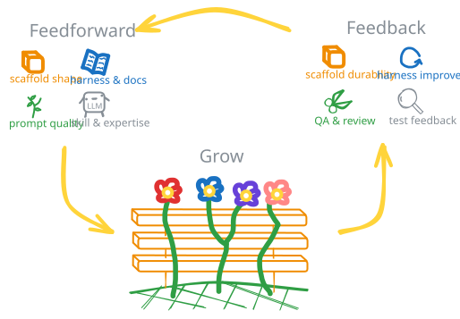
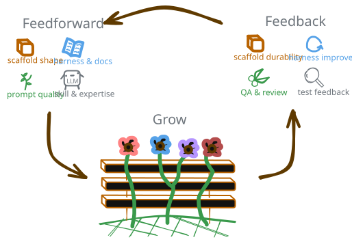
This requires strong systems for both feedforward and feedback to accomplish2:
- Feedforward contains all of the environmental tools available when an agent starts with zero context. It’s the tools available to them, as well as what they can get through those tools. This will change depending on your harness, but think in terms of the scaffolding that’s been built, the quality of previous code, the documentation available, and the quality of the prompts they’re given.
- Feedback contains all of the tooling, both deterministic and non-deterministic, that are used to evaluate the quality of an agent contribution. The faster, the better: anything that can be done to rapidly confirm quality gates and evaluate the work done in a timely and inexpensive manner has critical value.
Once quality can be accounted for, the feedforward and feedback loops can, themselves, be iteratively improved on. The miracle of modern agriculture is not the amount of food we grow: it’s the technology we’ve built around something unpredictable to make sure we harness the most benefit, and least harm, from a chaotic process.
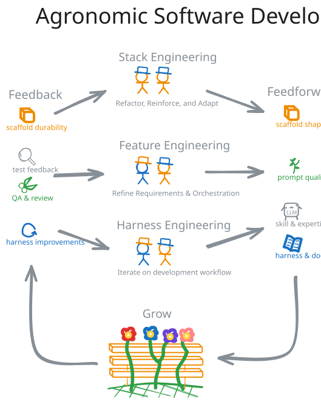
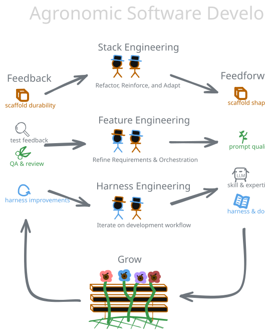
The major shift in this framework is that human beings aren’t as involved in the nitty-gritty, line-by-line details of the product code. The product code is what’s being grown, derived from:
- The quality of the stack
- The accuracy of the specifications; and
- The feedforward and feedback loops of development
In my own experience adopting this approach, you get more than just a high-quality product out of the other side. Out of this, your team can generate strong frameworks on which to build future work and a well-defined system for creating other products.
The system isn’t without its drawbacks, though. Because its byproducts are stable framework libraries and a system for developing more products, it doesn’t work well in isolation. If your team is responsible for just a single product or service, I wouldn’t recommend this; the shift in mindset and responsibilities likely isn’t worth the benefit you’d get out of the byproducts. However, if your team is responsible for many products, where libraries can be re-used elsewhere and the agronomic loop can be repurposed for other initiatives, I highly recommend giving this approach a try.
If you want to give this a try, I’d recommend seeding the process on a backlog project; something that your team has wanted, or needed, to do for awhile but never had the prior time, resources, or direct working knowledge to pull. Once you start to develop a feedback loop and stack libraries, those are perfect candidates to cross-pollinate the process upwards to other products you’re working on.
In the end, you’ll get what many other engineering teams are scrambling for at the moment: a system where LLMs have a clearly defined and managed role in your development process, and the people on your team can focus in on the judgements and vision that actually move you towards a better output.
Footnotes
-
The irony is not lost on me that both require massive amounts of water and land, although a square mile of farmland is probably of more intrinsic value than a square mile of data center. ↩
-
I cannot take credit for the concepts of “feedforward” and “feedback” — all credit goes to Birgitta Böckeler, from her post “Harness engineering for coding agent users” ↩